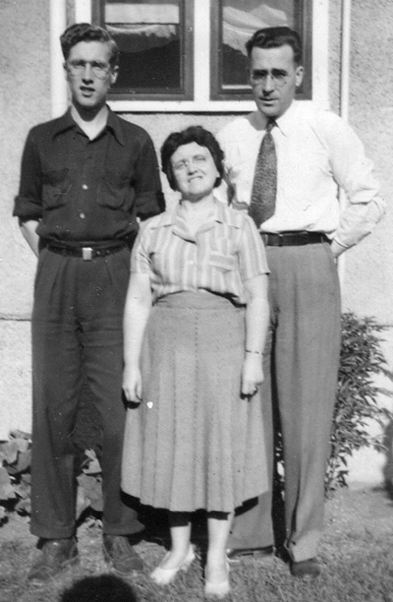
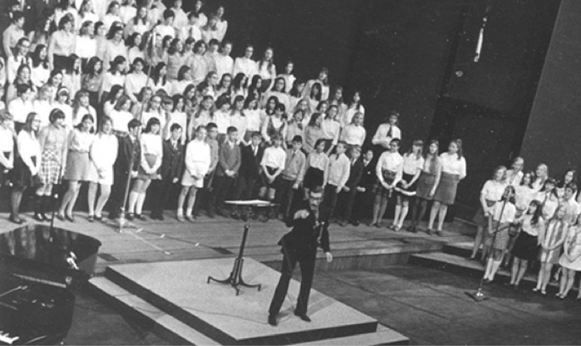
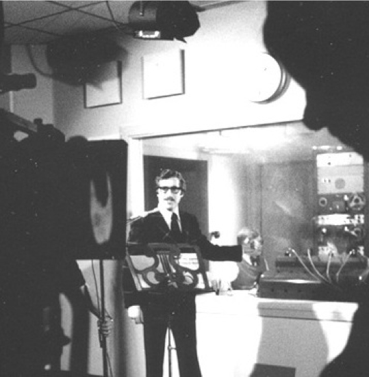

-1-MasterItem.svg)
Stories of Westminster United Church & its People / Page
173
GLEN HARRISON, Choir Director, 1957-2009
G. Glen Harrison was born in Winnipeg in 1929, and attended Laura Secord,
Isaac Brock and Daniel McIntyre schools. His interest in musical theatre
developed early, and while at Daniel McIntyre he had starring roles in the
Gilbert and Sullivan operettas
The Mikado
,
The Pirates of Penzance
, and
H.M.S. Pinafore
. (Pictured at left with his parents, Nellie and Gilbert.)
Glen attended the University of Manitoba, and when he auditioned for
the University Glee Club, he met the accompanist, Margaret Dow, who later
became his wife. He became a school music teacher, beginning his career
in 1950 at Lord Selkirk School, and later teaching at Principal Sparling,
Sargent Park and Elmwood schools. He trained the school choirs and
entered them in the Manitoba Music Festival each spring;
they went home with many of the trophies.
While still in the classroom Glen started as the ‘voice’ of the Manitoba
school broadcast
Let’s Sing Together
. This co-production of the CBC and the
Manitoba Department of Education was very popular in elementary school
classrooms in western Canada and later across the country, and ran from
1956 to 1978. From 1971 to 1978 Glen worked for the Department of
Education and produced their radio and television programs.
In 1961 Glen became coordinator of music in Seven Oaks School
Division. Besides the normal duties of the position, in his 10 years there
he produced three Broadway shows for the School Division’s Community
School Program, in which members of the community and friends joined
to put on
Die Fleidermaus
,
Carousel
and
Brigadoon
.
In the meantime, Glen was also active in the musical productions at
Rainbow Stage, being a performer in the early years, then Chorus Master
and later Conductor and Music Director. In addition, he was music director
Table
of Contents
Music at Westminster


